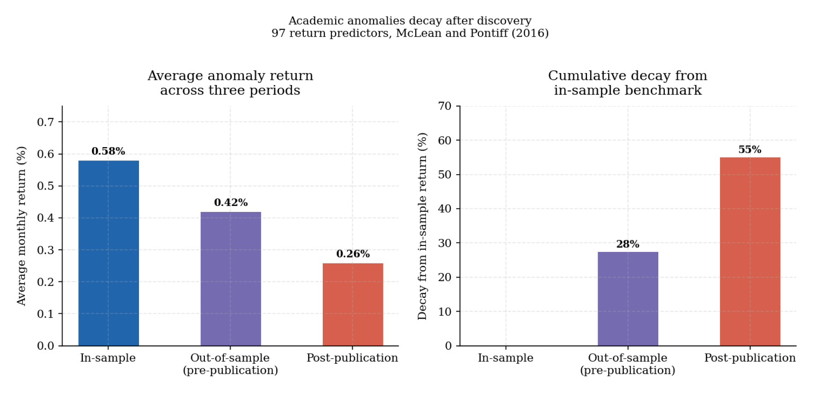
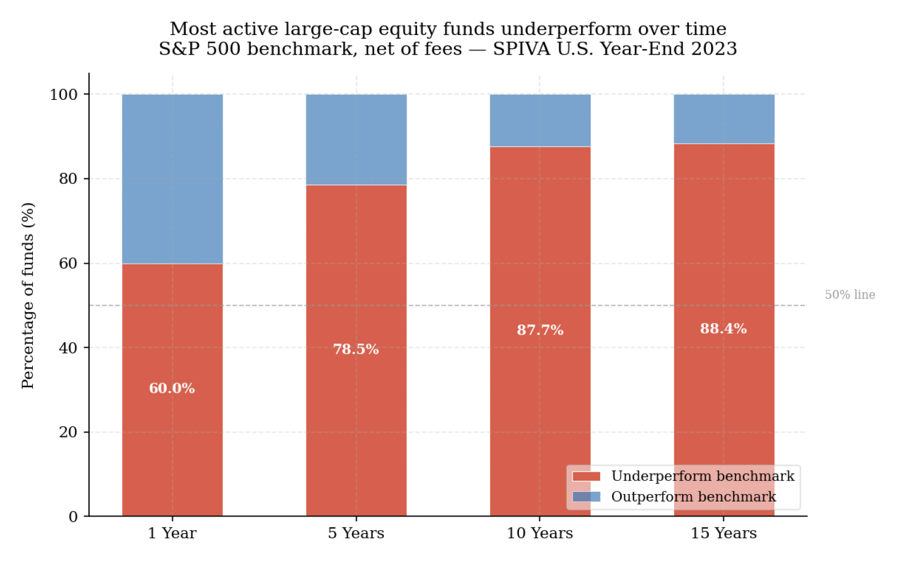

2. Signals, forecasting, and the difficulty of active outperformance
Knowing what prices are and how they can drift from any reasonable value anchor is necessary but not sufficient. The harder question is whether that knowledge can be turned into a consistent investment edge — a method for identifying mispricings before they correct, acting on them, and doing so repeatedly enough that the results exceed what passive exposure would have delivered. This section examines why that effort, across thousands of skilled analysts and sophisticated quantitative systems, so rarely produces persistent excess return net of costs. The answer matters not because it argues against analytical work, but because it clarifies what that work can and cannot reliably accomplish.
How investors try to form an edge — and the limits of each approach
Investors use two broad approaches to form a view on whether an asset is mispriced. The first asks what the asset is worth based on its economic fundamentals. The second asks what the market is communicating through the behavior of prices. Both are legitimate. Both have structural limits. And understanding those limits is more valuable than mastering either method alone.
Both approaches operate against the same theoretical backdrop: the efficient market hypothesis. As formalized by Fama, the EMH holds that prices reflect available information — but in three forms that are routinely treated as equivalent (Fama, 1970). The weak form holds that historical price data contains no exploitable signal. The semi-strong form extends this to all publicly available information, which includes earnings reports, balance sheets, analyst forecasts, and macroeconomic data. The strong form extends it to all information including private. The semi-strong form is what matters most for both fundamental and price-based work: if it holds fully, neither approach can generate persistent excess return from publicly available information, because that information is already reflected in price.
The empirical record suggests the semi-strong form holds approximately but not perfectly. There are documented cases where public information is not instantly or fully incorporated into prices — post-earnings-announcement drift being the most replicated example. These deviations are the territory both fundamental and price-based investors are trying to exploit. The debate is not whether they exist but how durable they are, how quickly they close, and whether they can be accessed after costs.
Fundamental analysis
Fundamental analysis rests on a specific claim: that the price of an asset can deviate from its intrinsic value for extended periods, and that careful analysis of the underlying economics can identify those deviations before they correct. The intellectual foundation runs from Graham and Dodd’s original margin of safety concept (Graham & Dodd, 1934) through the academic value premium literature — the empirical finding that assets trading at low multiples relative to earnings, book value, or cash flow have historically outperformed assets trading at high multiples, after adjusting for risk (Fama & French, 1993).
In practice, fundamental analysis means understanding what drives cash generation, what constrains margins, where operating leverage sits, how management allocates capital, and what could cause permanent impairment. The central appeal is that it grounds investment work in the economics of what is actually being owned, rather than in the path of the quotation alone (Damodaran, 2006). At its best it forces questions that must be answered before capital is committed: what does this asset actually produce, what does it cost, what could damage it, and does the current price leave room for a return that is worth the risk?
The empirical case for fundamental approaches is real but nuanced. Post-earnings-announcement drift — the tendency for stock prices to continue moving in the direction of an earnings surprise for weeks after the announcement — is one of the most replicated findings in the literature, suggesting that fundamental information is not instantly reflected in prices (Bernard & Thomas, 1989). Research by Cohen, Polk, and Vuolteenaho shows that cash-flow news and discount-rate news affect stock prices differently, and that investors who can separate the two have a genuine analytical advantage (Cohen et al., 2003). The accruals anomaly — the finding that firms with high accounting accruals subsequently underperform — suggests that fundamental analysis of earnings quality contains information that prices do not immediately incorporate (Sloan, 1996).
The limits are more frequently understated by those who practice the method. Correct analysis is not equivalent to differentiated analysis — a company can be well understood, genuinely high quality, and still be a mediocre investment if the market already knows what the analyst knows. There is also the question of timing: a fundamental framework concentrating on long-run normalized earnings may be entirely correct and still be irrelevant when the market is pricing short-term refinancing risk, regulatory uncertainty, or macro regime sensitivity.
Price-based analysis
Price-based analysis asks what the market itself is communicating through the behavior of prices and volumes. The random walk model is the purest expression of the weak-form EMH as applied here: if price changes are serially uncorrelated and driven entirely by unpredictable new information, then past prices contain no useful information about future prices. Lo and MacKinlay rejected this directly using variance-ratio tests on weekly U.S. stock returns — they found positive serial correlation inconsistent with a pure random walk (Lo & MacKinlay, 1988). That rejection does not prove markets are broadly forecastable. It does mean price data has historically contained structure beyond pure noise.
Lo’s adaptive markets hypothesis offers a more useful resolution (Lo, 2017): rather than treating efficiency as a fixed property, it treats it as a moving equilibrium. Markets become more efficient as competition for exploitable patterns intensifies, and less efficient when that competition diminishes or when market structure changes. A trading rule that worked in the 1970s may have been arbitraged away by the 1990s. A new source of inefficiency may have emerged in the 2010s as passive flows changed the price formation process.
At its more serious end, price-based work attempts to extract information from the collective behavior of market participants — about crowding, positioning, the pace of information diffusion, and shifts in risk appetite not yet visible in fundamental data. A security that begins to underperform persistently despite appearing cheap on a normalized earnings basis is telling the analyst something. Ignoring that signal in the name of analytical purity is a different way of filtering out adverse evidence.
Brock, Lakonishok, and LeBaron found that simple moving-average rules generated buy signals with higher mean returns than sell signals across ninety years of Dow Jones data (Brock et al., 1992). Jegadeesh and Titman documented that stocks in the top return decile over the prior three to twelve months continued to outperform those in the bottom decile, a finding replicated across international markets and asset classes (Jegadeesh & Titman, 1993). Three mechanisms recur consistently in the literature. Trend persistence arises because information diffuses gradually — institutional position adjustment takes time and benchmark-driven flows reinforce existing moves (Hong & Stein, 1999). Reversal arises when positioning becomes crowded enough that the dominant move exhausts itself (De Bondt & Thaler, 1985). Breadth and participation carry information about the structural support behind a move — a narrow, leader-driven advance has historically been less durable than a broad one (Lowry, 2003).
Why signals decay and what that implies
The existence of structure in historical price data does not mean that structure is exploitable indefinitely. Most signals disappoint for one of three reasons.
The first is that the signal was never economically meaningful. It appeared significant in-sample but had no durable mechanism. McLean and Pontiff tested 97 return predictors from published academic papers and found that out-of-sample returns were on average 26 percent lower than in-sample returns, and that post-publication returns were 58 percent lower — consistent with a large fraction of documented anomalies reflecting overfitting, and whatever was real being partially arbitraged once publicized (McLean & Pontiff, 2016). The chart below shows this decay pattern. The in-sample to post-publication drop is the systematic consequence of publishing a strategy into a competitive market.
The second reason is crowding. A return premium that existed because it was difficult to access or insufficiently understood erodes once systematic capital targets it at scale. The premium may not disappear entirely — if it reflects risk bearing that remains structurally unrewarded by some participants — but its magnitude and consistency typically compress.
The third is regime dependency. Some signals work only under specific macro conditions. When those conditions change, the signal fails not because the original idea was wrong but because the environment in which it operated has shifted. The chart below shows the momentum factor’s average monthly return across low and high inflation regimes. Momentum has historically earned meaningfully lower returns in high-inflation environments — consistent with inflation regimes changing the market microstructure in ways that reduce the gradual information diffusion on which momentum depends.

A signal should therefore be evaluated not only on its historical average return but on why it worked, under what conditions, and whether those conditions are likely to persist. A pattern that survives in-sample, out-of-sample, across multiple geographies, and across different inflation and policy regimes is a much stronger candidate than one that worked in one market during one decade.
Why active management fails more often than it should
Once the nature of signals and their limitations are understood, the aggregate evidence on active management becomes less surprising — but the structural reasons for underperformance are often misunderstood.
The starting point is Sharpe’s arithmetic (Sharpe, 1991). Before costs, the average actively managed dollar must equal the average passively managed dollar, because active investors in aggregate hold the market. This is a mathematical identity rather than an empirical observation: active and passive investors together own all securities, and since passive investors hold the market portfolio, active investors must also hold the market portfolio in aggregate. Therefore the average active dollar earns the market return before costs. After costs — fees, transaction costs, taxes, and the bid-ask spread — the average active dollar must underperform. Outperformance is possible for individual managers, but it is necessarily zero-sum before costs and negative-sum after them.
This arithmetic has a further implication that is less often stated. The existence of genuinely skilled managers does not by itself imply that investors can benefit from accessing that skill. Berk and Green’s equilibrium model shows why (Berk & Green, 2004): if skilled managers exist and investors can identify them, capital flows to those managers until decreasing returns to scale eliminate the net benefit. At equilibrium, the expected net alpha to investors — after fees and after the impact of assets under management on the manager’s ability to generate returns — is approximately zero. The manager captures the value of their skill through fees; the investor receives only the market return net of costs.
The empirical evidence is consistent with this structure. The S&P SPIVA U.S. Year-End 2023 scorecard found that over fifteen years, approximately 88 percent of large-cap active equity funds underperformed the S&P 500 net of fees (S&P Dow Jones Indices, 2023). The chart below makes the pattern visible across horizons. The underperformance rate rises consistently as the horizon lengthens — not because managers become less skilled over time, but because costs compound and because short-term outperformance is partly luck that does not persist.

Carhart’s study of mutual fund persistence found that what appeared to be persistent outperformance was largely explained by momentum exposure in winning positions and cost drag in high-fee vehicles — not by repeatable stock-selection skill (Carhart, 1997). These results do not prove that skill is absent. They prove that skill, wherever it exists, is expensive to access, difficult to identify in advance, and systematically eroded by the competitive equilibrium that Berk and Green describe.
Where active work still earns its place
The aggregate evidence is unsympathetic to active management, but it does not argue for the elimination of analytical work. The distinction that matters is between what active research reliably produces and what it rarely but occasionally delivers.
Active research at its best produces three things that passive allocation cannot: genuine asset understanding, improved selectivity, and scenario clarity. These are not substitutes for outperformance — they are the substantive contributions that justify maintaining an analytical process even in a world where persistent net alpha is rare.
Asset understanding means knowing what drives cash generation, what constrains margins, where operating leverage sits, how management allocates capital, and what could cause permanent impairment. Damodaran’s framework for intrinsic valuation is useful here not as a precision tool but as a structured approach: it forces the investor to specify the assumptions behind a price rather than accepting the market’s implied assumptions passively (Damodaran, 2006). This is most valuable not in finding hidden opportunities but in avoiding avoidable errors — distinguishing cyclical weakness from structural impairment, durable businesses from fragile ones, genuine earnings growth from accounting-driven inflation.
Selectivity matters most when markets group together assets that should not be grouped. Friewald, Wagner, and Zechner show that credit returns contain a substantial equity-like component, meaning that in stress periods the market tends to sell down corporate bonds indiscriminately before differentiating by balance-sheet quality (Friewald et al., 2014). The investor with genuine credit analysis can distinguish bonds of businesses with strong free cash flow from those facing genuine impairment. Cohen, Polk, and Vuolteenaho show that cash-flow news and discount-rate news affect stock prices differently, and that investors who can separate the two have an analytical advantage in determining whether a price decline represents genuine deterioration or merely a repricing of required return (Cohen et al., 2003).
Scenario clarity means knowing which assumptions matter most and what would have to be true for the thesis to fail. Graham and Dodd’s concept of margin of safety is the clearest historical expression: the investor should require that the price paid is sufficiently below estimated value that errors in estimation do not produce permanent capital loss (Graham & Dodd, 1934). Montier documents how rarely investors perform this analysis, and how frequently the resulting overconfidence leads to oversizing positions whose fragility is not visible from the central estimate alone (Montier, 2007).
These contributions improve investment quality even when they do not produce excess return. Active research earns its place not by guaranteeing outperformance but by reducing the frequency and severity of avoidable errors — which, compounded over a long investment horizon, is itself a form of edge. The question that follows is what return sources actually exist to be harvested, and how they should be organized into a portfolio. That is the subject of section 3.
References
Berk, J. B., & Green, R. C. (2004). Mutual fund flows and performance in rational markets. Journal of Political Economy, 112(6), 1269–1295. https://www.nber.org/system/files/working_papers/w9275/w9275.pdf
Bernard, V. L., & Thomas, J. K. (1989). Post-earnings-announcement drift: Delayed price response or risk premium? Journal of Accounting Research, 27, 1–36. https://ideas.repec.org/a/bla/joares/v27y1989ip1-36.html
Brock, W., Lakonishok, J., & LeBaron, B. (1992). Simple technical trading rules and the stochastic properties of stock returns. The Journal of Finance, 47(5), 1731–1764. https://www.jstor.org/stable/pdf/2328994.pdf
Carhart, M. M. (1997). On persistence in mutual fund performance. The Journal of Finance, 52(1), 57–82.
Cohen, R. B., Polk, C., & Vuolteenaho, T. (2003). The value spread. The Journal of Finance, 58(2), 609–641. https://www.jstor.org/stable/3094556
Damodaran, A. (2006). Damodaran on valuation. Wiley. https://pages.stern.nyu.edu/~adamodar/pdfiles/DSV2/Ch2.pdf
De Bondt, W. F. M., & Thaler, R. (1985). Does the stock market overreact? The Journal of Finance, 40(3), 793–805. https://www.jstor.org/stable/2327804
Fama, E. F. (1970). Efficient capital markets: A review of theory and empirical work. The Journal of Finance, 25(2), 383–417. https://www.jstor.org/stable/2325486
Fama, E. F., & French, K. R. (1993). Common risk factors in the returns on stocks and bonds. Journal of Financial Economics, 33(1), 3–56.
Friewald, N., Wagner, C., & Zechner, J. (2014). The cross-section of credit risk premia and equity returns. The Journal of Finance, 69(6), 2419–2469. https://www.jstor.org/stable/43611073
Graham, B., & Dodd, D. L. (1934). Security analysis. McGraw-Hill.
Hong, H., & Stein, J. C. (1999). A unified theory of underreaction, momentum trading, and overreaction in asset markets. The Journal of Finance, 54(6), 2143–2184.
Jegadeesh, N., & Titman, S. (1993). Returns to buying winners and selling losers: Implications for stock market efficiency. The Journal of Finance, 48(1), 65–91. https://www.jstor.org/stable/pdf/2328882.pdf
Lo, A. W. (2017). Adaptive markets: Financial evolution at the speed of thought. Princeton University Press.
Lo, A. W., & MacKinlay, A. C. (1988). Stock market prices do not follow random walks: Evidence from a simple specification test. Review of Financial Studies, 1(1), 41–66. https://www.nber.org/system/files/working_papers/w2168/w2168.pdf
Lowry, M. (2003). Why does IPO volume fluctuate so much? Journal of Financial Economics, 67(1), 3–40. https://www.nber.org/system/files/working_papers/w7935/w7935.pdf
McLean, R. D., & Pontiff, J. (2016). Does academic research destroy stock return predictability? The Journal of Finance, 71(1), 5–32. https://papers.ssrn.com/sol3/papers.cfm?abstract_id=2156623
Montier, J. (2007). Behavioural investing: A practitioner’s guide to applying behavioural finance. Wiley.
Sharpe, W. F. (1991). The arithmetic of active management. Financial Analysts Journal, 47(1), 7–9. https://web.stanford.edu/~wfsharpe/art/active/active.htm
Sloan, R. G. (1996). Do stock prices fully reflect information in accruals and cash flows about future earnings? The Accounting Review, 71(3), 289–315.
S&P Dow Jones Indices. (2023). SPIVA U.S. Year-end 2023 scorecard. https://www.spglobal.com/spdji/en/spiva/article/spiva-us/